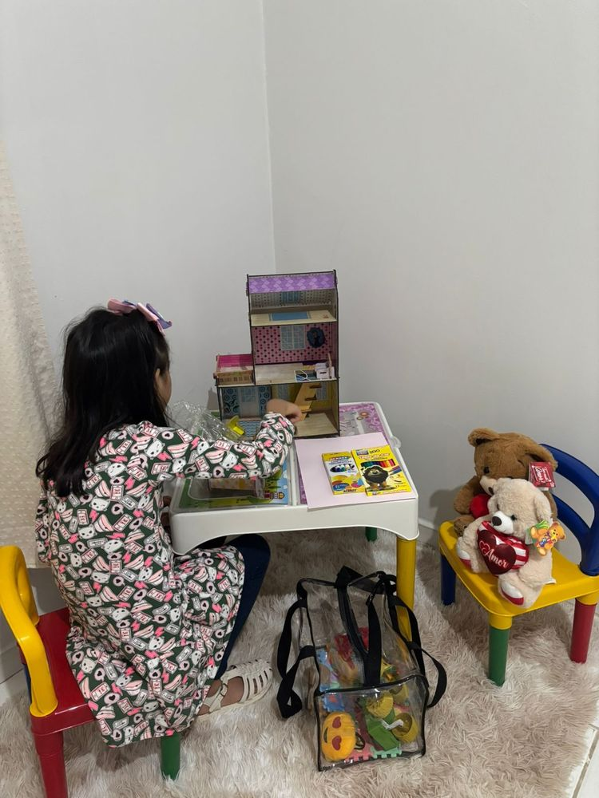
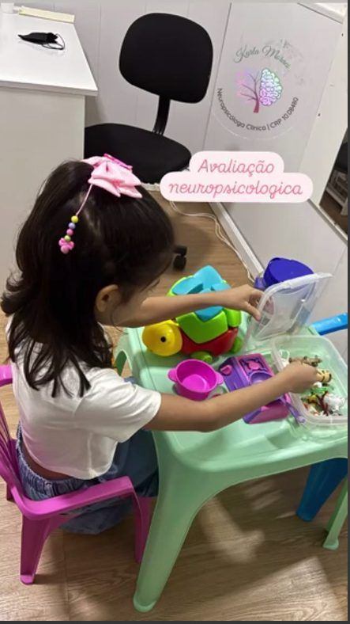
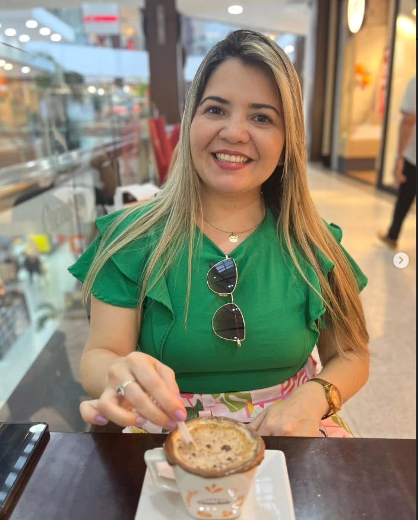
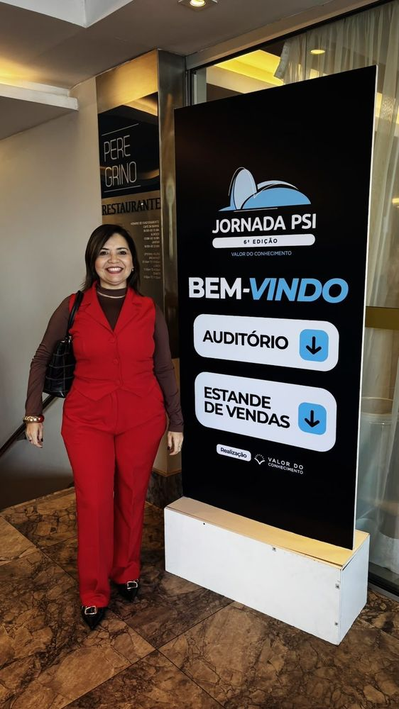

Neuropsicologia clínica especializada com abordagem humanizada e científica. Diagnóstico preciso e orientação profissional para seu bem-estar cognitivo e emocional.
Atendimento especializado em neuropsicologia clínica com foco em diagnóstico preciso e orientação profissional
Olá! Sou Dra. Karla Moraes, Neuropsicóloga especializada em avaliação neuropsicológica de crianças a partir de 3 anos, adolescentes e adultos.
Atuo com foco no Psicodiagnóstico e Avaliação de condições que afetam o funcionamento cognitivo, emocional e comportamental, sempre com um olhar humanizado e fundamentado em evidências científicas.
Realizo avaliações completas, com emissão de laudos que auxiliam no entendimento de dificuldades de (aprendizagem, dislexia, ansiedade, depressão, TDAH e suspeita de autismo).
Meu objetivo é promover autoconhecimento, orientar intervenções eficazes e contribuir para a qualidade de vida dos meus pacientes em cada fase da vida.




Agende sua consulta e dê o primeiro passo para o seu bem-estar
Tv Humaitá 1270A Bairro Pedreira
CEP: 66083-340
(91) 98264 - 4888
Psicologakarlamoraes@gmail.com
Segunda a Sexta: 8h às 18h
Entre em contato agora mesmo.